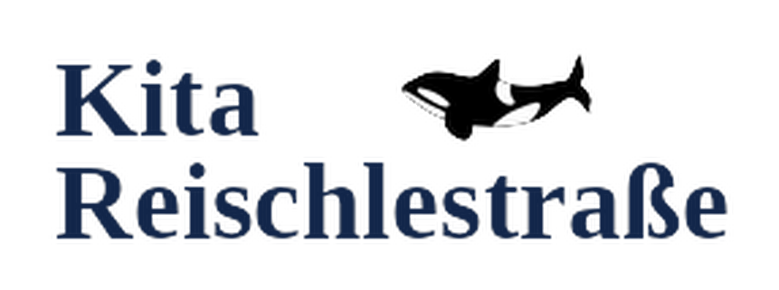

Elternbeirat der Kita Reischlestraße · Kita-Jahr 2026/27
Liebe Judith, Elham, Julian, Maria, Nicole und Veronika,
Sie wurden für das Kita-Jahr 2026/27 in den Elternbeirat der Kita Reischlestraße gewählt – dazu gratulieren wir Ihnen ganz herzlich!
Wir freuen uns sehr, dass Sie diese Aufgabe übernehmen, und auf eine vertrauensvolle, offene Zusammenarbeit. Der Elternbeirat ist die Stimme der Eltern in unserer Kita, ein wichtiges Bindeglied zwischen Familien, Team und Leitung und damit eine große Bereicherung für unser Haus.
Vielen Dank für Ihre Zeit und Ihr Engagement. Gemeinsam gestalten wir das Kita-Jahr für unsere Kinder.
Zur einfachen Abstimmung von Terminen und für den kurzen Draht untereinander gibt es die Gruppe „Elternbeirat KiTa Reischle 26/27“.
So treten Sie bei: WhatsApp öffnen, mit der Kamera den QR-Code scannen und dem Beitritt zustimmen. Bitte geben Sie den Code nicht weiter, damit die Gruppe im Kreis des Elternbeirats bleibt.
Mit herzlichen Grüßen
Matthias Stilwell
Kita-Leitung